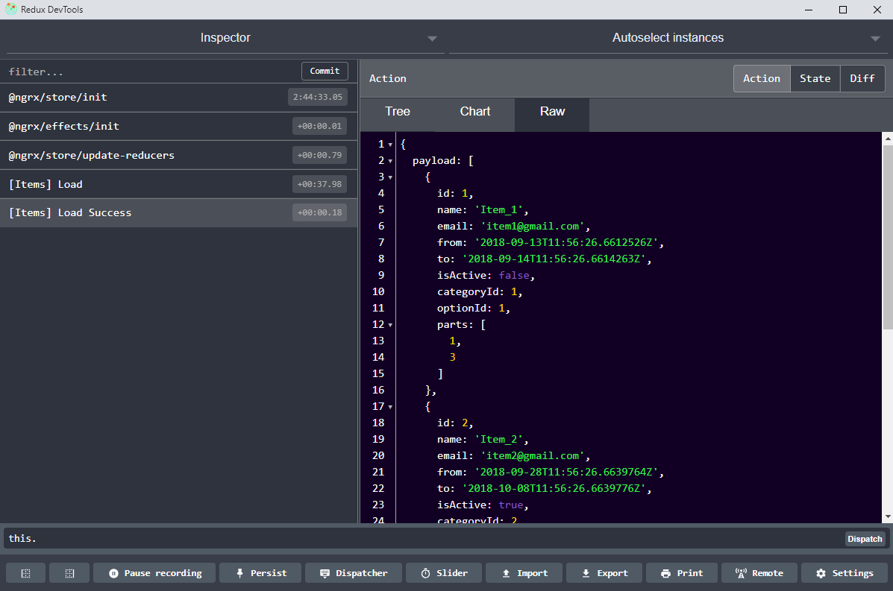

Redux is a pattern that tries to handle complexity that arises from managing application state by hand.
There is only one object that stores whole application state.
Application state is read only and the only way to mutate it is to completely replace it with new state which is done by emitting action that describes what happened. Those actions are passed through pure function called a reducer which returns next application state.
Each module should represent application's sub-state which means each module should define four major components:
Note: you need to be fairly comfortable (or at least have decent ammount of examples from which you can conclude what the result of effect will be so you can use the right one ) with RxJS library since it's heavily used by @ngrx/effects. RxJS is out of scope of this demo :(
Clicking on button bellow will dispatch Load action defined in '../state/actions.ts'. This action is caught by ItemsEffects ('../state/effects.ts') which performs AJAX request.
Depending on result, either LoadSuccess or FailedAction is dispatched.
Action result will go through reducer which will update Application State.
Everybody subscribed to either of these events directly or through getItems selector defined in '../state/index.ts' will get notified with new payload based on response.
Click on any item to trigger GetById Action. When action completes Store is updated.
Both Components are subscribed to getSelectedItem through ngrx selector. Each time Value in Store changes new value is 'pushed' to all subscribers.
Note: Component's subscription is done through 'async' pipe in HTML.
Note: Notice how when you navigate back to this url data is already fetched from the store
Instead of using selectors you can subscribe to specific action by using Actions service defined in '@ngrx/effects'.
Use constructor injection to inject it into your component / service.
In the example below, SnackBarService is subscribed to ItemsActionTypes.FailedAction through Actions service.
Each time FailedAction is dispatched, SnackBarService gets notification through subscription.
You can use this extension for Chrome or other available non-browsers to help you with debugging.
Npm : @ngrx/store-devtools
Initialize StoreDevtoolsModule in your app main module.
After you installed and open the extension you can examine changes to application state and individual actions which is very helpful during debugging.
